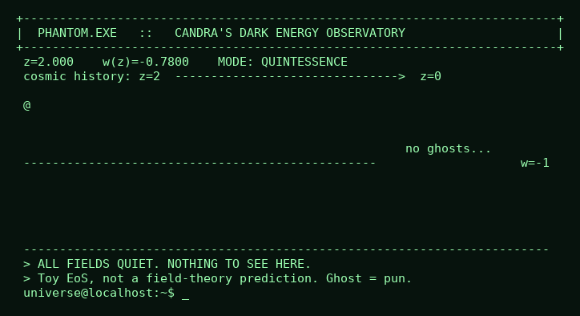
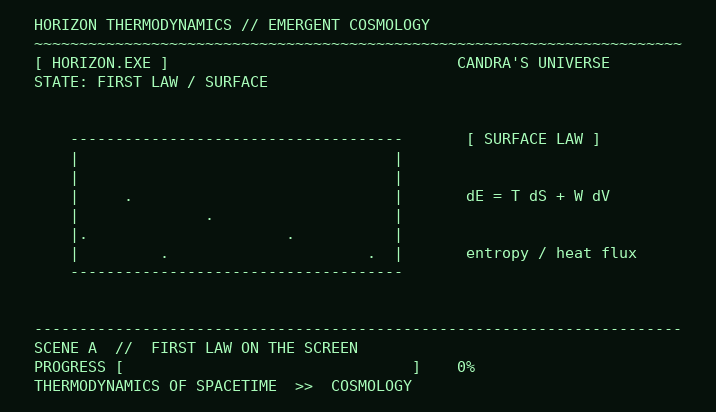
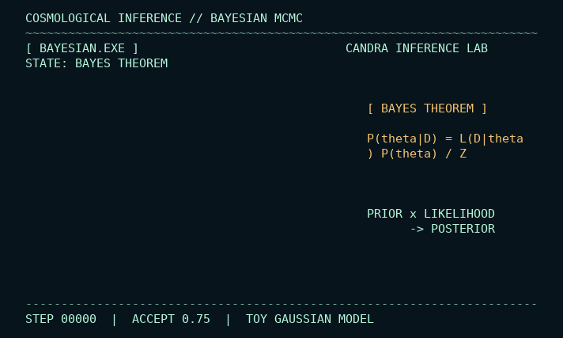

01. Dark energy and cosmology
Cosmic expansion, dynamical dark energy, phantom-divide crossing, and alternative cosmological scenarios.
DARK ENERGY / ASCII ANIMATION

PERSONAL ACADEMIC HOMEPAGE EST. 2026
PhD Student · The Institute for Fundamental Study
Naresuan University, Thailand
I am a PhD student at The Institute for Fundamental Study, Naresuan University, Thailand. My research interests include theoretical cosmology, dark-energy models, gravity-thermodynamics relations, and observational tests of cosmological models.
This website collects my research interests, publications, and occasional notes on physics and scientific computing.
Cosmic expansion, dynamical dark energy, phantom-divide crossing, and alternative cosmological scenarios.

Horizon entropy, apparent horizon thermodynamics, holographic equipartition, and emergent cosmology.

Numerical modeling, Bayesian inference, MCMC methods, and cosmological constraints from observational data.

A list of peer-reviewed papers and preprints will be added here.
Occasional writing about cosmology, physics, computation, and learning science—in English and Bahasa Indonesia.
GitHub: github.com/candramuhammad
Other academic profile and contact links can be added here.